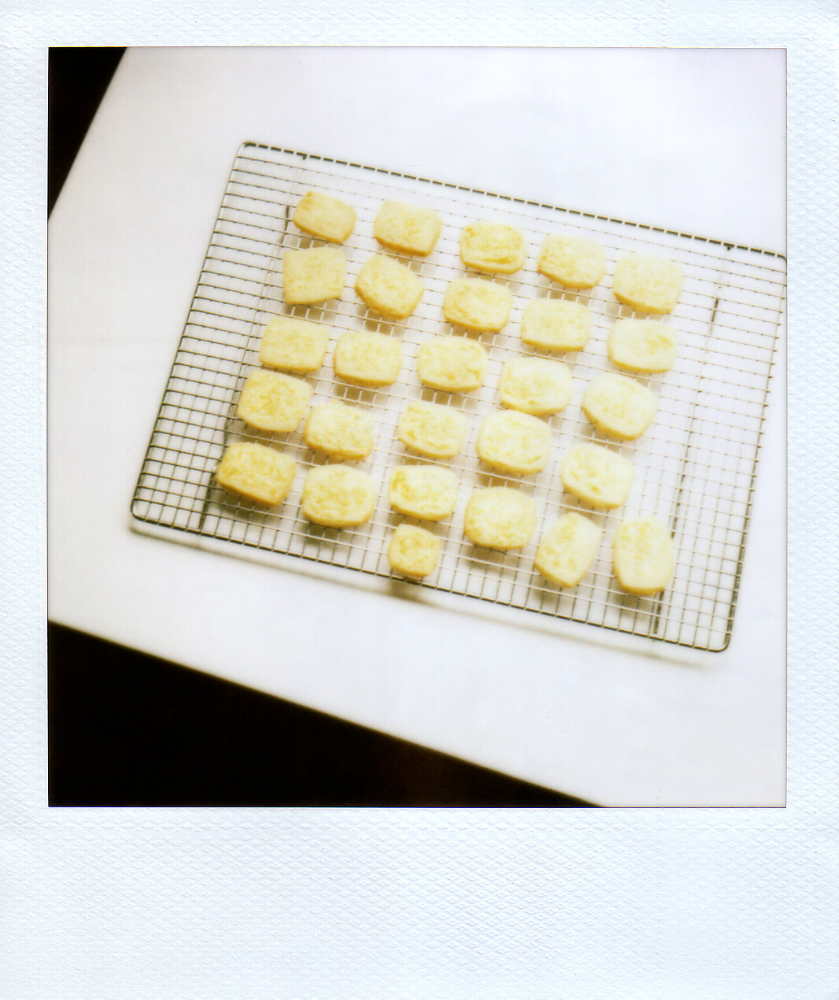
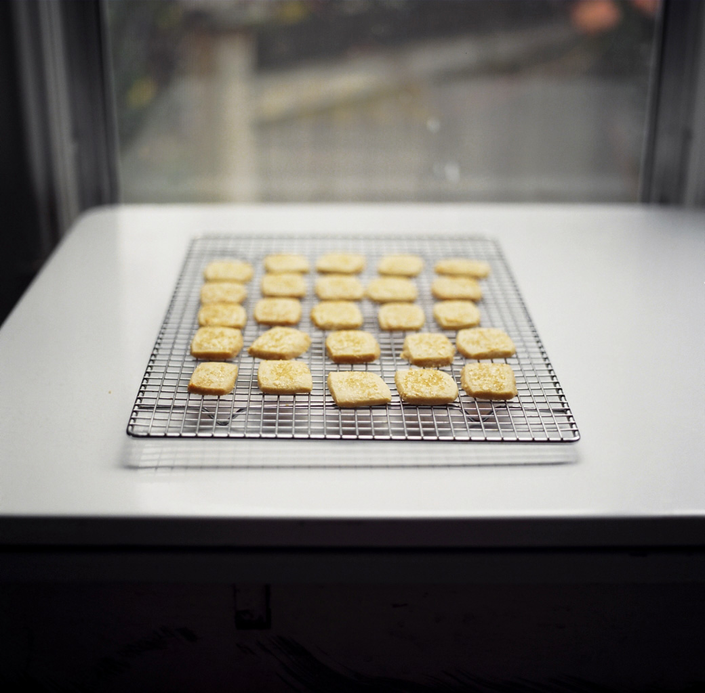
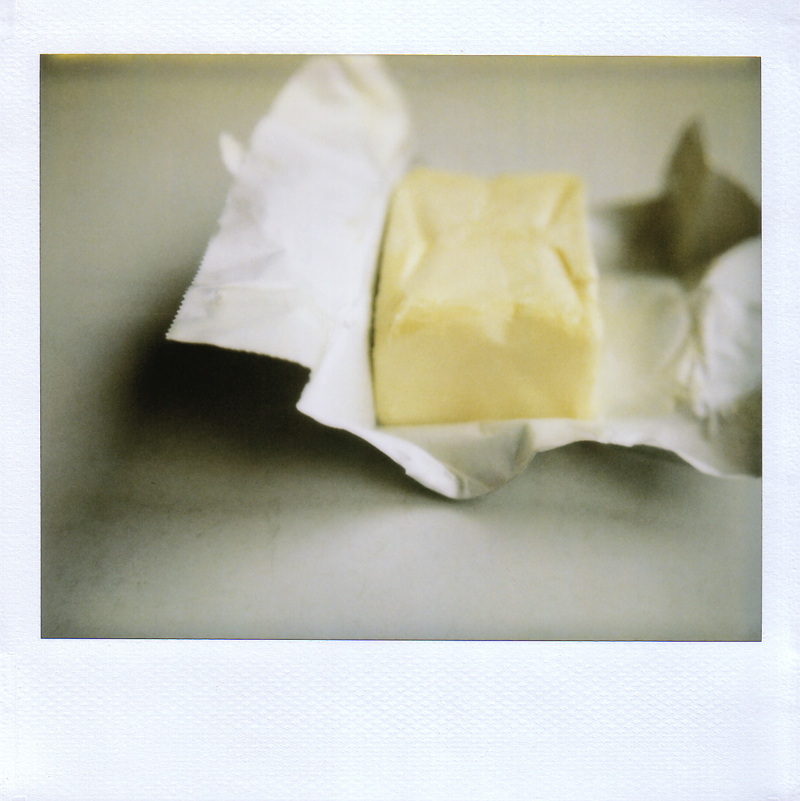

Tag: enormous amounts of butter
For that very reason
I don’t know where to begin. You people spoil me. Do you know that? Brandon and I cannot even dream of how to adequately thank you for the immensely kind and utterly galvanizing comments you left in response to The Big Restaurant Announcement. Some of you even sent e-mails, offering advice, encouragement, and hands-on(!) help(!). I’m still trying to pick my jaw up off the floor. Thank you. Or rather, I mean, THANK YOU. If I could hire a plane to write it in the sky, I would, because that would best capture the magnitude of the sentiment. But we have a budget to stay within, you understand.
So, onward we go, right? I will keep you posted, I promise, as the process moves along. This week, Brandon’s main project is to design the layout of the kitchen, which is a rather fraught endeavor, as you can imagine. And soon I’ll be spending some time over there with my cameras, documenting the construction process, which I’m pretty excited about. I like taking pictures of messes – it’s the neatnik in me, I think, trying perversely to impose order – and what we’ve got right now definitely qualifies as a mess.

As does, conveniently, this photograph. These Danish butter cookies are not only one of the most wonderful things I have eaten lately, but they are also among the most difficult items I have ever, ever, tried to photograph. For one thing, they’re plain and monochromatic, as butter cookies generally are. They’re lovely to eat, but sort of boring to look at. Also, I’m almost positive that while I was washing the dishes, they held a secret meeting on the cooling rack and decided, just for fun, to wiggle a little bit each time I tried to take their picture. I think they also got the sun in on the game, because the light today was awful. Don’t even ask about the close-up shots. If I had a dime for every time I cussed at these blurry naughties, I would have, well, like, a dollar. That may not seem like much, but it could buy me a first-rate bagel at Absolute Bagels. To punish the cookies for their disobedience, Brandon and I ate about a half dozen of them, and then, take that, I put the rest in the freezer. Something tells me they won’t act up again.
{kind=link}
This weekend, and these cookies, marked the beginning of my annual holiday baking ritual. Those of you who have been reading for a while may remember that a cloud of powdered sugar generally hovers over this site each December, and this one is no exception. For the third year in a row, I’ve decided to give handmade gifts for the holidays. Mainly because it makes me feel good, but also because it keeps me out of the mall, which is good for everyone, I assure you. I’m making a number of candies and cookies, like this and this and this and the recalcitrant specimens above, and I’m also making a few non-food things that I won’t reveal here, because their recipients might be reading. And because handmade doesn’t necessarily mean homemade, I also bought a few things from this beautiful shop, and from this one too. If money were no object, I would also buy a ban.do for my cousin Sarah, who loves to wear tiaras, because ban.dos are sort of like tiaras, only better. Sadly, I think she will have to settle for something a little less impressive, but it’s the thought that counts, I hear.

But about the butter cookies. I hope I didn’t make them sound too maddening, because the truth is, so long as you don’t come after them with a camera, they are completely docile. And they’re very, very delicious, which is all that matters. They may be modest little ladies – yes, somehow, they seem female to me; I can’t explain it – but they’re beguiling: delicate and not too sweet, rich with the flavor of pure butter and tender enough to melt the second they meet your tongue. The first one I tasted made my eyes roll back in my head, and that doesn’t usually happen unless there is chocolate involved. I found the recipe in this month’s Gourmet, and it sounded so perfectly simple that I had to try it. It was sent to the magazine by a reader in New Jersey, who explained that it was a fifth-generation family recipe from Denmark. Having now tried it, I can well understand its longevity. It is, without a doubt, a keeper.
{kind=link}

It begins with a pound of butter. The key, I think, is that it calls for Lurpak butter, a particularly delicious – if pricey – brand produced, of course, in Denmark. I know that sounds fussy, but it’s worth the trouble to seek it out and pay the extra pennies, because it really is a wonderful butter, and these cookies are all about the butter. If you’ve ever eaten store-bought Danish butter cookies, you will recognize the concept, only the homemade version is worlds – entire universes, even – more delicious. To make it, you start by creaming the butter in a mixer, and then you add flour, baking soda, and sugar. Like I said, perfectly simple. You roll out the dough between sheets of plastic wrap, and then you chill it briefly, until it feels firm to the touch. Then you cut it into rectangles, brush it with egg and sprinkle it with coarse sugar, and bake until the edges go barely golden.
{kind=link}
The finished cookies are dainty as sand dollars, with the familiar, irresistible, and profoundly reassuring fragrance of warm butter. If these cookies wore clothes, I’m pretty sure they would wear roomy blouses and long, full skirts with pastel flowers and, underneath, flesh-colored pantyhose and white satin slips with fine lace trim. Actually, now that I’ve typed that, I notice that I have just, in essence, described my grandmother. But it fits, and it’s how I feel about these cookies. They’re not hip or flashy or even photogenic, but I sort of love them anyway, and maybe even for that very reason.
Real Danish Butter Cookies
Adapted from Gourmet, December 2008
These would be really, really wonderful with a cup of tea. If you plan to give them as gifts, be sure to package them carefully, since they’re so delicate.
Set racks in the upper and lower thirds of the oven, and preheat to 325°F. Line 2 large baking sheets with parchment.
In a medium bowl, whisk together the flour and baking soda.
In the bowl of a stand mixer fitted with the paddle attachment, beat the butter until fluffy. Then add the sugar and beat briefly to combine. Add the flour mixture, and beat on low speed until just combined. (Unless you have a plastic guard that sits around the rim of the bowl, this will make a big mess at first, with flour flying everywhere. I found that carefully holding a dish towel around the top of the bowl helped a lot.) The dough will appear crumbly, but if you squeeze a bit in your hand, it will cohere. Divide the dough in half.
Roll each half between large sheets of plastic wrap into a rectangle approximately 10 by 15 inches, about 1/8 inch thick. Transfer, still in plastic wrap, to a baking sheet, and refrigerate until firm, about 30 minutes. Then remove the top layer of plastic wrap and cut into
2-by-1 ½-inch rectangles. (I tried this with some of my dough, but I found that the finished, baked cookies were a little larger than I wanted, so I wound up cutting next batch of rectangles in half, and I liked that size better. You might want to play around and decide for yourself.) Arrange the rectangles 1 inch apart on the prepared baking sheets. If the dough becomes too soft, chill or freeze until it is again firm enough to handle.
Brush the tops of the cookies very lightly with the beaten egg, and then sprinkle with sanding sugar. Bake the cookies, 2 sheets at a time, switching positions of the pans halfway through baking, until they are very pale golden, 12 to 15 minutes. Cool on the baking sheets for 5 minutes; then carefully slide the cookies, still on the parchment, onto wire racks. Cool completely. Make more cookies with the remaining dough, baking on cooled, freshly lined baking sheets. Reroll scraps once.
Note: Cookies will keep at room temperature for up to a week. Because I don’t plan to give mine away to friends for a week or two, I froze mine, and I’ll bet they’d be just fine that for a month or two, easy.
Yield: about 9 dozen cookies